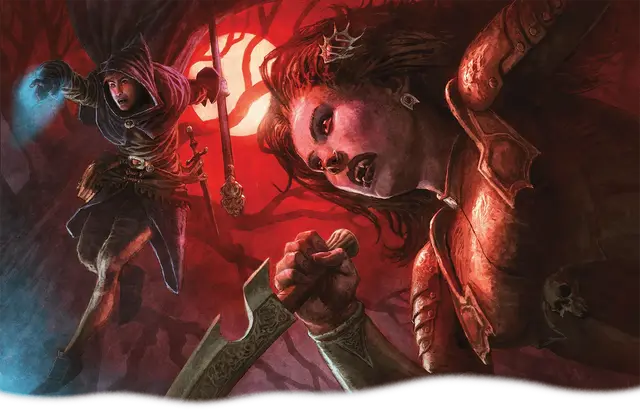

Дампир
Dhampir

Тип существа Гуманоид
Размер Средний (рост около 4-7 футов) или Маленький (рост около 2-4 футов); выберите при выборе этого вида
Скорость 35 футов
Дампиры живы, но обладают как способностями вампиров, так и их ужасным голодом. Большинство дампиров жаждут крови, но некоторые питаются снами, жизненной энергией или из других источников. Каждый дампир должен выбрать, будет ли он пытаться держать свой голод под контролем — или поддаться хищническим желаниям.
Новый дампир, как правило, появляется после встречи с вампиром. Часть из них — это потомки могущественных вампиров, часть — лишь частично превращены при укусе вампира. Из ужасающих сделок и ритуалов некромантов тоже может выйти новый дампир. Каким бы образом дампир ни стал дампиром, всех их отличают различные проявления их вампирской натуры, включая большую скорость и высасывающие жизнь укусы.
Особенности
Вы обладаете следующими особенностями вида:
Тёмное зрение. Вы обладаете Тёмным зрением дальностью 60 футов.
Паучье лазание. Вы обладаете Скоростью лазания, равной вашей Скорости. Достигнув 3-го уровня персонажа, вы можете перемещаться вверх, вниз и по горизонтали на вертикальных поверхностях и потолках, не требуя для этого рук.
След не-жизни. Вы обладаете Сопротивлением Некротическому урону.
Укус вампира. Когда вы совершаете Безоружный удар и наносите им урон, вы можете нанести этот урон укусом вашими клыками. В таком случае вместо обычного урона Безоружного удара вы наносите Колющий урон, равный 1к4 + ваш модификатор Телосложения.
Кроме того, когда вы совершаете такой укус по существу, и это существо не Конструкт и не Нежить, вы можете укрепить себя, выбирая из следующих вариантов:
Вытягивание. Вы восстанавливаете Хиты в количестве, равном нанесённому укусом Колющему урону.
Усиление. Вы получаете бонус к следующему вашему броску атаки или проверке характеристики, совершаемым в течение следующей минуты; этот бонус равен нанесённому укусом Колющему урону.
Вы можете укрепить себя таким образом количество раз, равное вашему Бонусу владения. Вы восстанавливаете все потраченные использования по завершению Долгого отдыха.